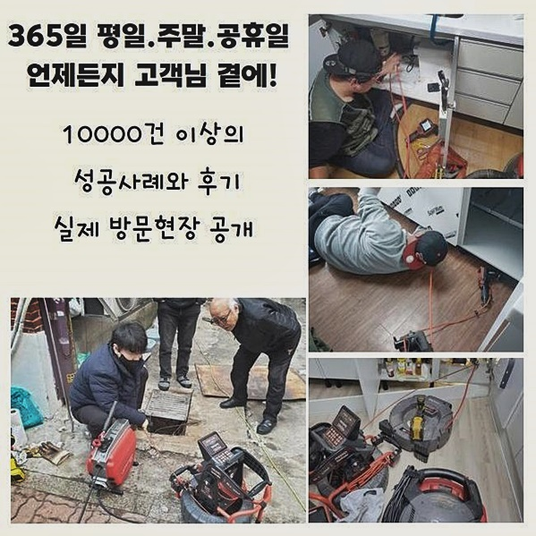
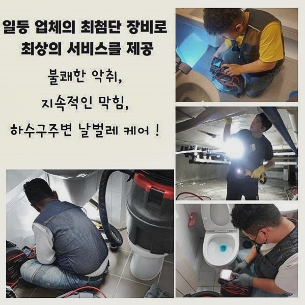
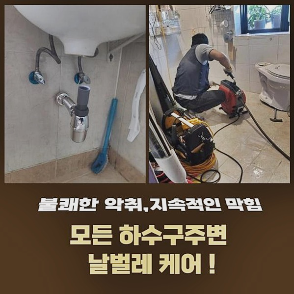
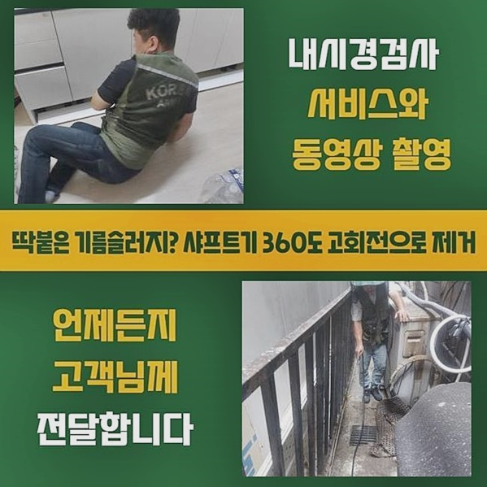
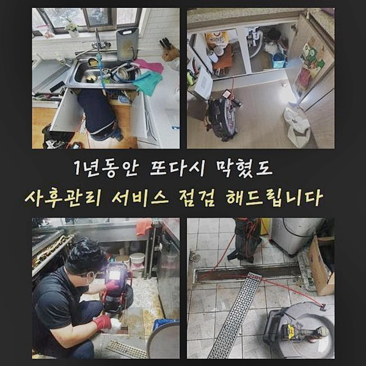
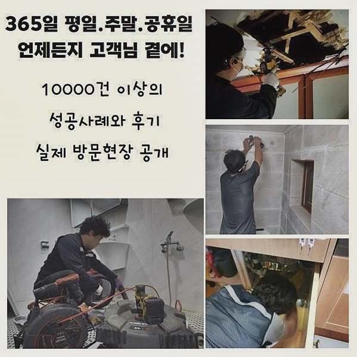
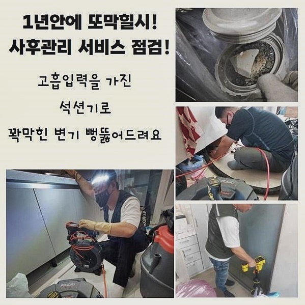

🏠 금천구 가산동대변기역류 시흥동 맨홀역류 출장설비
용인시 처인구 배관막힘 전문 시공 후기

📋 작업 개요
- 위치: 용인시 처인구, 수원시 영통구, 화성시 동탄
- 서비스 유형: 배관막힘, 고압세척, 내시경점검
- 작업 일시:
- 업체명: 하수구수사대 (010-5615-2118)
🔍 문제 상황
금천구 가산동대변기역류 시흥동 맨홀역류 출장설비
다수의 세대가 함께 머무르는 장소는 다수의 원인으로 물이 차단되고 막혀버리죠
이번에 갔던 작업지는 다수가 사는 빌라였어요 최고로 아랫층에서 하수구가 차단돼서 정상적인 생활이 힘드셨던 사태를 맞이하셨습니다
하수가 이동되지 못하거나 역행까지 일어난다면 건물의 가장 하단부에서 처음으로 감지될 때가 많습니다
하수구 문제가 자주 생기는 이유를 거슬러가면 배관이 탑재하고 있는 모양으로 인한 것입니다
하수를 들여보내고 내보내는 공정을 문제 없이 이어지게 해주려면 모든 세대 배관들과 중앙 하수관이 동일한 이동경로로 합류됩니다
보통 파이프들은 하나로 뭉치기 때문에 한 구간이 더럽혀져서 봉쇄되거나 트러블이 빚어졌을 경우에는 비단 한 군데에서만 오류가 보이는 것이 아니라 많은 호실들에서 빠짐 없이 한꺼번에 사건이 될 수 있습니다
거꾸로 범람하는 현상 외에도 실시간으로 점점 악화되는 배관 설비의 손상때문에 밑에 위치한 세대에서 손해를 엄청나게 크게 입고 힘들어하셨네요
건물을 유지보수하시던 관리인 직원분이 배관이 중단되어 난리라고 출장이 필요하다고 전화를 해준신 상황이었죠
물의 흐름이 순조롭게 스무스하게 이뤄지지 못한 사유로 많은 가구원에게도 이로 인한 문제가 전달되고 있는 모습으로 보였습니다
전화로 전달을 받은 정보들을 발판 삼아서 작업에 대한 청사진을 그려보고 도구나 기기를 빠짐없이 챙기고 고객님께로 달려갔습니다

🔎 원인 분석
💡 전문가 진단: 정밀 진단 장비를 사용하여 슬러지의 고착 여부를 판명하고 타격/세척 작업을 실시했습니다.
하수구가 고장나는 사건은 낮과 밤을 가리지 않고 단독이건 다중주택이건 직면할 수 있는 문제입니다
딱히 말썽이 없더라도 하수구에 대한 사안들에 촉각을 곤두세워서 잘못된 낌새가 보일 때 바로바로 행동할 수 있는 정보력을 갖추는 것이 가장 현명합니다!
다수의 상황들을 극복해 오면서 종합적인 막힘문제를 안고 있다해도 정확하게 상황을 진단하고 해소를 해드리고 있으니 마음 편히 전화를 주시면 그만입니다
주소지에 도착하면 가장 빠른 수순으로 문제의 본질이 무엇인지 검증하고 시작합니다
연락을 이미 받긴 했지만 전문적 통찰력으로 볼 때 사안의 핵심으로 보이는 곳들은 추가적 문제까지 꼬집어낼 수 있기에 진단은 필히 수반되어야 합니다
뚫기에 급급하는 것보다 무엇이 오류를 만들었나 알아야만 작업 자체의 퀄리티도 훨씬 향상되기 때문이죠!
난리통을 방불케 하는 작업지를 바라보면서 한순간에 건물의 고충들을 확 뚫어낼 수 있는 해결책을 물색해 봐요
탐사장치를 활용해서 중앙 배관을 검토하면서 막힘을 빚은 뿌리를 발굴해 나갔습니다
각 세대에서 사용하고 내려보낸 하수가 명쾌하게 흐르지 못했던 것은 바로 기름 슬러지 잔해물 덩이가 빈틈 없이 장애물처럼 막고 있었죠
잔수는 빠지지 않는데 물을 조금만 힘줘서 돌려도 추가분이 범람하면서 두꺼운 중앙 배관과 제일 인근에 있다고 할 수 있는 가장 밑에 위치한 세대에서 물이 역행하는 초유의 사태가 금방 촉발된 것이죠!
숙련공으로 활동하면서 다양한 작업지에서 까다로운 막힘들을 수선해 드렸던 시간들이 많이 누적되었으니 다분히 농축된 노하우로 현황의 분석과 그에 걸맞는 해결법을 포착할 수 있게 됩니다!
하수구를 거쳐서 물을 버리는 와중에 다수의 더러운 불순물이 섞이는데요!

🔧 작업 과정
제대로 처리되지 못하고 쌓여가면서 부피가 확장되어 막혀버렸다고 짐작할 수 있었습니다
끼인 이물을 걷어내는 일을 통하여 본질적인 부분을 근절하는 것이 시급하다고 사료되었습니다
뭐 때문에 빚어진 일인지 정확히 확인하는 단계가 그만큼 중요도가 있으므로 전용 카메라를 넣어서 보이지 않는 관로의 탐방을 진행시켜 나갔습니다
이런 카메라는 보편적으로 병의원에서 사용하는 생각하시는 경우가 많은데 깊고 어두운 파이프에 딱 맞게 생산된 관찰용 기기입니다
배관은 통로가 좁고 습해서 눈으로 들여다 보는 방법으로는 심층부의 내막은 알아차리기가 까다로운 구조를 지니고 있으니 이런 조건의 내부 상황을 실시간으로 중개하는 지원책이 필요합니다
설비에 맞춰서 나온 기기의 유용성은 약화됐을지 모를 하수구의 상처입히지 않는 선에서 순조롭게 배관 장애를 풀 수 있기 때문이죠
충분한 이해도나 베이스 없이 하는 장치의 활용은 하수구에 부주의해서 생긴 상처를 만들어 하수구의 통 교체라는 심각한 오래 소요되는 공사를 부릅니다
이물질을 만든 종류와 사이즈나 특성들을 모두 알아냈다면 작업 로드를 꾸리는데 든든한 발판이 됩니다
전문업체를 알아보신다면 오랜 업력으로 빚어진 노하우를 보유한데다 구체적으로 기술해둔 포트폴리오를 꼼꼼하게 살펴보신 이후에 선정하시면 결과물이 좋을 겁니다
많은 장소의 관로가 똑같은 꼴로 만들어 지지 않았고 노후화 정도나 종류부터가 다 다르고 어려운 경우도 많아요
그렇기 때문에 내부 탐사 과정을 임할 때는 여러 섹션을 확인을 하고 한 곳에 오류인자가 부각된다 해도 이 장소를 포함하여 연결된 전체 배수관을 꼼꼼하게 따져봐야 합니다
문제되는 위치들을 발견했다면 이 안으로 무슨 기기를 써서 장애물을 소거시킬 것인지 계획을 세워야 하겠죠
방해 요소를 걷어올리려는 목적으로 투입되는 기계는 종류가 많지만 상황에 맞춤으로 다뤄야 막힘 원인을 말끔히 뚫고서 정상화 시킬 수 있어요
조사를 기반으로 문제가 가장 부각되는 위치의 이물질을 덜어내주기 위해서 배관 고압세척 청소를 진행했어요
노폐물이 자욱하게 끼이고 경화된 파트가 간혹 보인다면 회전력이 엄청난 샤프트 장치로 부드럽게 잘라내 줍니다
샤프트는 벽면을 따라서 돌처럼 단단하게 말라붙은 이물질들을 분해하고 휘감아 꺼내는 식으로 다양한 용도로 활용됩니다
물길을 방해물 없이 만들고 센 물살을 활용해서 잔뜩 오염된 배관을 제대로 닦아내 줍니다
잔여물이 전혀 없어야만 하수구에 기름으로 인한 슬러지가 다시 탄생하지 않을 철저한 정화를 이뤄낼 수 있어요


✅ 작업 완료
진공으로 흡입하는 석션기로 유연하게 풀어진 오염물들을 잔량이 전혀 남지 않도록 관로에서 꺼내줬어요
잔량이 조금이라도 있어서 배수구가 또 중단되는 일은 용인될 수 없는 불찰이기에 항시 내시경을 동시에 삽입하여 남아있는 이물이 남지않게 신중히 조사했어요
하수도는 여러군데에서 폐기된 찌꺼기가 모여드는 파트인 만큼 정기적으로 점검해야 합니다
내부 진단을 주기적으로 해주고 때때로 청소도 해준다면 설비적인 곤란함 없이 물을 마음껏 이용할 수 있죠
하수관 막힘으로 인하여 곤란한 국면을 맞이하셨다면 시간대를 가리지 마시고 현재 상황을 설명해 주세요!




⚠️ 하수구 배관 막힘 예방 및 관리 가이드
- ✅ 머리카락, 비닐, 물티슈 등 물에 분해되지 않는 이물질은 절대 흘려보내지 마세요.
- ✅ 기름기 많은 식기는 설거지 전 키친타올로 먼저 기름때를 닦아내세요.
- ✅ 주기적으로 배수구에 뜨거운 물을 가득 부어주어 유지방 고착을 방지하세요.
- ✅ 작업 후 1년 이내 재발 시 무상 A/S 보증 서비스를 제공합니다.
💡 핵심 정리
- 확실한 장비 작업(내시경 점검 및 샤프트 스케일링)으로 원인을 뿌리 뽑습니다.
- 작업 후 1년 이내에 동일한 부위 재발 시 100% 무상 A/S 서비스를 보장합니다.
- 서울 · 경기 · 인천 전 지역에 24시간 언제든 긴급 출동할 수 있도록 항시 대기 중입니다.
❓ 자주 묻는 질문 (FAQ)
🚨 용인시 처인구 배관막힘 문제로 고민이신가요?
정확한 원인 진단과 확실한 시공으로 재발 없는 해결을 약속드립니다.
24시간 긴급 출동 | 서울 · 경기 · 인천 전지역 | 1년 내 재발 시 무상 A/S